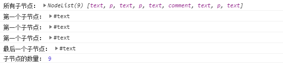

剑指前端（前端入门笔记系列）——DOM（基本组成与操作）原文出处:本文由博客园博主AI-fisher提供。
原文连接:https://www.cnblogs.com/AI-fisher/p/11115606.html
DOM是针对HTML和XML文档的一个API（应用程序编程接口）。DOM描绘了一个层次化的节点树，允许开发人员添加、移除和修改页面的某一部分。他给文档提供了一种结构化的表达方式，可以改变文档的内容和呈现方式，我们最关心的是，DOM把网页和脚本以及其他的编程语言联系了起来。所谓的DOM是以家族的形式描述HTML（父子节点和兄弟节点），那么，什么是DOM呢？我们可以从这几点解析一下：
- DOM是document Object Model的缩写，简称文档对象模型（文档、模型）。这个对象就是document
- DOM可以将任何HTML和XML文档描绘成一个多层节点构成的结构
- DOM结构中的每一个成分称为一个节点，节点分为几种不同的类型，每种类型都拥有各自不同的特点、数据和方法。每个节点与其他节点存在某种关系，所以节点之间的关系构成了层次。文档节点是每个文档的根节点。<html>元素是文档节点的子节点，被称为文档元素，每个文档只能有一个文档元素
- 每一段标记都可以通过树中的一个节点来表示：元素通过元素节点来表示，特性通过特性通过特性节点来表示，文档通过文档节点来表示，而注释通过注释节点来表示，总能共有十二种类型，这些类型都继承自一个基类型。
- XML中，没有预定义的元素，因此任何元素都可能成为文档元素
Node类型
Dom定义了一个Node接口，该接口由DOM中的所有节点类型实现，这个Node接口在JavaScript中是作为Node类型来实现的；除了IE以外，在其他所有浏览器中都可以访问到这个类型。JavaScript中的所有节点类型都继承自Node类型，因此所有节点都共享着相同的基本属性和方法。
常量
每个节点都有一个nodeType属性，用于表明节点类型。节点类型由在Node类型中定义的下列12个数值常量来表示：
- Node.ELEMENT_NODE //元素节点对应的常量，对应数字值1
- Node.ATTRIBUTE_NODE //属性节点对应的常量，对应数字值2
- Node.TEXT_NODE //文本节点对应的常量，对应数字值3
- Node.CDATA_SECTION_NODE //CDATA区段对应的常量，对应数字值4
- Node.ENTITY_REFERENCE_NODE //实体引用元素对应的常量，对应数字值5
- Node.ENTITY_NODE //实体对应的常量，对应数字值6
- Node.PROCESSING_INSTRUCTION_NODE //表示处理指令对应的常量，对应数字值7
- Node.COMMENT_NODE //注释节点对应的常量，对应数字值8
- Node.DOCUMENT_NODE //最外层的根节点对应的常量，对应数字值9
- Node.DOCUMENT_TYPE_NODE //<!DOCTYPE………..>对应的常量，对应数字值10
- Node.DOCUMENT_FRAGMENT_NODE //文档碎片节点对应的常量，对应数字值11
- Node.NOTATION_NODE //DTD 中声明的符号节点对应的常量，对应数字值12
属性
nodeType属性（节点的类型）
因为nodeType属性有两种值，所以确定节点的类型有两种方式：
第一种是直接通过对应的常量进行比较判断，但在IE中无效：
<div id="box"></div>
<script type="text/javascript">
var oBox = document.getElementById("box");
if(oBox.nodeType == Node.ELEMENT_NODE){
console.log("元素节点");
}else {
console.log("不是元素节点");
}
</script>
第二种是通过对应的数字值进行比较判断，这种方式适用于所有浏览器：
<div id="box"></div>
<script type="text/javascript">
var oBox = document.getElementById("box");
if(oBox.nodeType == 1){
console.log("元素节点");
}else {
console.log("不是元素节点");
}
</script>
也就是常量和数字值是可以互换的，只不过数字值可以兼容各个浏览器。
nodeName（节点名字）、nodeValue（节点值）
要了解节点的具体信息，可以使用这两个属性。这两个属性完全取决于节点的类型。下面列出一些基本的对照表。
文档中的节点之间都存在这样或那样的关系，文档树就好比族谱，存在父子关系和兄弟关系。因为其他节点不能起名字（id、class之类的），所有节点中只有元素节点可以被直接获取，其他种类的节点只能通过获取到的元素节点间接获取，而节点关系就是完成这个操作的利器。
childNode属性（执父索子）
该属性中保存着一个NodeList对象。这是一个类数组对象，用于保存一组有序的节点，说是类数组，那么里面的元素当然是用数组的方式来读取，而且它也有一个length属性，但它并不能称为一个真正的Array实例。下面的例子展示了如何访问保存在NodeList中的节点——可以通过方括号，也可以通过item()方法。当然，因为索引访问的方式类似于数组，所以开发人员更青睐于方括号来获取。
<div id="box">
<p>段落1</p>
<p>段落2</p>
<!--注释123-->
<p>段落3</p>
</div>
<script type="text/javascript">
var oBox = document.getElementById("box");
var firstChild_1 = oBox.childNodes[0];
var firstChild_2 = oBox.firstChild;
var firstChild_3 = oBox.childNodes.item(0);
var lastChild = oBox.lastChild;
var count = oBox.childNodes.length;
console.log("所有子节点：" , oBox.childNodes);
console.log("第一个子节点：" , firstChild_1);
console.log("第一个子节点：" , firstChild_2);
console.log("第一个子节点：" , firstChild_3);
console.log("最后一个子节点：" , lastChild);
console.log("子节点的数量：" , count);
</script>

这个类数组会把空格和换行当成文本节点保存起来，所以除去三个段落标签和一个注释标签，它还保存了五个由空格和换行组成的文本节点。这个例子是在一个节点有子节点的情况下，所以有必要提供一个检测函数hasChildNodes()来判断一个节点是否有子节点，如果有的话，它返回true，反之为false，这比查询childNodes列表的length属性有效多了。
parentNode属性（执子索父）
我们都知道一个父亲可以有多个亲生儿子，但是儿子却只能有一个亲生父亲。所以childNode属性返回的是一个包含了多个节点的类数组，而parentNode属性只返回一个节点。
<div id="box">
<p class="p1">段落1</p>
<p>段落2</p>
<!--注释123-->
<p>段落3</p>
</div>
<script type="text/javascript">
var oP= document.getElementsByClassName("p1")[0];
var parent = oP.parentNode;
console.log("父节点为：" , parent);
</script>
除了操作父子关系用到的属性，每个节点还提供了操作兄弟关系的属性。
previousSibling属性（前一个兄弟节点）、nextSibling属性（后一个兄弟节点）
<div id="box">
<p class="p1">段落1</p>
<span></span>
<h1>段落2</h1>
<!--注释123-->
<p>段落3</p>
</div>
<script type="text/javascript">
var oP= document.getElementsByClassName("p1")[0];
var preSibling = oP.previousSibling;
var nextSibling = oP.nextSibling;
console.log("前一个兄弟节点为：" , preSibling);
console.log("后一个兄弟节点为：" , nextSibling);
</script>
特殊的，第一个节点的previousSibling属性和最后一个节点的nextSibling属性都为null
总结
（1）DOM由各种类型的节点组成
（2）每种节点都有其对应的属性值（类型、名字以及值）
（3）每个节点都可以由其他节点用父子关系和兄弟关系检索并获取